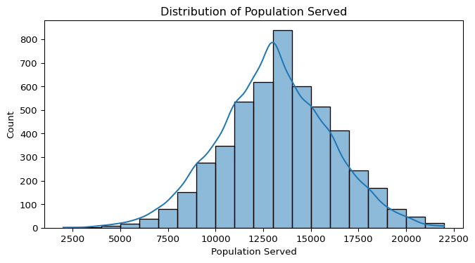

import pandas as pd
import numpy as np
import matplotlib.pyplot as plt
import seaborn as snsNumerical_eda
# This code imports the os as a module to interact with the operating system
import os
# To display the current working directory to identity where Python is excecuting the scripts.
print("Current working directory:", os.getcwd())Current working directory: C:\Users\jgpet\OneDrive\Desktop\DATA ANALYST\Data Analytic Portfolio\Lets make Musicupdated\python-projects# Change the working directory to the folder containing the file
os.chdir(r"C:\Users\jgpet\OneDrive\Desktop\Gradiate school\2025\DSCI 5240\Final Project")
# Verify the change
print("New working directory:", os.getcwd())New working directory: C:\Users\jgpet\OneDrive\Desktop\Gradiate school\2025\DSCI 5240\Final Project# Load data file inot python as a pandas data frame
# Load data into Data frame using row 1 as the header
Final_project = pd.read_csv("DSCI 5240 Project Data.csv", header=0)# Ensure all columns are displayed in a table format
pd.set_option("display.max_rows", None)
pd.set_option("display.max_columns", None)
pd.set_option("display.width", 1000)
pd.set_option("display.colheader_justify", "center")
Final_project.head()| Water Pump ID | Water Source Type | Water Quality | Distance to Nearest Town | Population Served | Installation Year | Funder | Payment Type | Water Pump Age | Pump Type | GPS Coordinates | Functioning Status | |
|---|---|---|---|---|---|---|---|---|---|---|---|---|
| 0 | WP001 | Well | Clean | 44.0 | 13000.0 | 2006.0 | World Bank | Free | 18.0 | Motorized Pump | (-20.599463060030295, 26.696000047794744) | Functioning |
| 1 | WP002 | Lake | Clean | 13.0 | 13000.0 | 1990.0 | Red Cross | Free | 34.0 | Hand Pump | (-20.69129769992364, 23.313405231404484) | Not Functioning |
| 2 | WP003 | Lake | Clean | 27.0 | 12000.0 | 1997.0 | Oxfam | Pay per use | 27.0 | Hand Pump | (-19.830951420391948, 26.650358442338003) | Not Functioning |
| 3 | WP004 | Well | Clean | 14.0 | 9000.0 | 1992.0 | Oxfam | Pay per use | 32.0 | NaN | (-22.335866062765565, 22.83485684389231) | Functioning |
| 4 | WP005 | Lake | Clean | 41.0 | 16000.0 | 2006.0 | NaN | Pay per use | 18.0 | Hand Pump | (-21.099305692773278, 24.799143614430015) | Functioning |
- Categorical variables: Water Source Type, Water Quality, Funder, Payment Type, Pump Type, Functioning Status
- Integer: Installation Year, Water Pump Age, Distance to Nearest Town, Population Served
Final_project.info()<class 'pandas.core.frame.DataFrame'>
RangeIndex: 5000 entries, 0 to 4999
Data columns (total 12 columns):
# Column Non-Null Count Dtype
--- ------ -------------- -----
0 Water Pump ID 4750 non-null object
1 Water Source Type 4750 non-null object
2 Water Quality 4750 non-null object
3 Distance to Nearest Town 4750 non-null float64
4 Population Served 4750 non-null float64
5 Installation Year 4750 non-null float64
6 Funder 4750 non-null object
7 Payment Type 4750 non-null object
8 Water Pump Age 4750 non-null float64
9 Pump Type 4750 non-null object
10 GPS Coordinates 4750 non-null object
11 Functioning Status 4750 non-null object
dtypes: float64(4), object(8)
memory usage: 468.9+ KBFinal_project.value_counts("Water Source Type")Water Source Type
Lake 2377
Well 1641
River 578
Borehole 154
Name: count, dtype: int64Water Source has 4 categories
Final_project.value_counts("Water Quality")Water Quality
Clean 4232
Contaminated 518
Name: count, dtype: int64Water Source has 3 categories
Final_project.value_counts("Funder")Funder
Red Cross 1719
Oxfam 1417
USAID 705
UNICEF 534
World Bank 375
Name: count, dtype: int64Water Source has 6 categories
Final_project.value_counts("Payment Type")Payment Type
Pay per use 3567
Free 1183
Name: count, dtype: int64Water Source has 3 categories
Final_project.value_counts("Pump Type")Pump Type
Hand Pump 2470
Motorized Pump 1832
Solar Pump 448
Name: count, dtype: int64Water Source has 4 categories
Final_project.value_counts("Functioning Status")Functioning Status
Not Functioning 2793
Functioning 1957
Name: count, dtype: int64Water Source has 3 categories
# For numerical columns
Final_project.describe()| Distance to Nearest Town | Population Served | Installation Year | Water Pump Age | |
|---|---|---|---|---|
| count | 4750.000000 | 4750.000000 | 4750.000000 | 4750.000000 |
| mean | 33.605684 | 13020.210526 | 2005.122947 | 18.921895 |
| std | 14.203737 | 2974.803284 | 8.893727 | 8.881974 |
| min | -3.000000 | 2000.000000 | 1990.000000 | 4.000000 |
| 25% | 21.000000 | 11000.000000 | 1997.000000 | 11.000000 |
| 50% | 35.000000 | 13000.000000 | 2005.000000 | 19.000000 |
| 75% | 44.000000 | 15000.000000 | 2013.000000 | 27.000000 |
| max | 76.000000 | 22000.000000 | 2020.000000 | 34.000000 |
- Should we convert to Ineger?
# Display missing values count for each column
Final_project.isnull().sum()Water Pump ID 250
Water Source Type 250
Water Quality 250
Distance to Nearest Town 250
Population Served 250
Installation Year 250
Funder 250
Payment Type 250
Water Pump Age 250
Pump Type 250
GPS Coordinates 250
Functioning Status 250
dtype: int64A. Handle missing values
- categorical_columns: Water Source Type, Water Quality, Funder, Payment Type, Pump Type, Functioning Status filled with mode
- numerical_columns: Distance to Nearest Town, Population Served, Installation Year, Water Pump Age filed with the median
- Dropped columns Water Pump ID and GPS Coordinates
# Fill categorical columns with the mode
categorical_columns = ['Water Source Type', 'Water Quality', 'Funder', 'Payment Type', 'Pump Type', 'Functioning Status']
for column in categorical_columns:
Final_project[column] = Final_project[column].fillna(Final_project[column].mode()[0])
# Fill numerical columns with the median
numerical_columns = ['Distance to Nearest Town', 'Population Served', 'Installation Year', 'Water Pump Age']
for column in numerical_columns:
Final_project[column] = Final_project[column].fillna(Final_project[column].median())# to drop columns Water Pump ID and GPS Coordinates: Do they add value to the dataset?
Final_project_clean = Final_project.drop(columns=['Water Pump ID', 'GPS Coordinates'])Final_project_clean.info()<class 'pandas.core.frame.DataFrame'>
RangeIndex: 5000 entries, 0 to 4999
Data columns (total 10 columns):
# Column Non-Null Count Dtype
--- ------ -------------- -----
0 Water Source Type 5000 non-null object
1 Water Quality 5000 non-null object
2 Distance to Nearest Town 5000 non-null float64
3 Population Served 5000 non-null float64
4 Installation Year 5000 non-null float64
5 Funder 5000 non-null object
6 Payment Type 5000 non-null object
7 Water Pump Age 5000 non-null float64
8 Pump Type 5000 non-null object
9 Functioning Status 5000 non-null object
dtypes: float64(4), object(6)
memory usage: 390.8+ KBData types 1. Convert to string: Water Source Type, Water Quality, Funder, Payment Type, Pump Type, Functioning Status 2. Convert to Integer Installation Year, Water Pump Age, Distance to Nearest Town, Population Served?
# Convert data types to strings
Final_project_clean['Water Source Type'] = Final_project_clean['Water Source Type'].astype('category')
Final_project_clean['Water Quality'] = Final_project_clean['Water Quality'].astype('category')
Final_project_clean['Funder'] = Final_project_clean['Funder'].astype('category')
Final_project_clean['Payment Type'] = Final_project_clean['Payment Type'].astype('category')
Final_project_clean['Pump Type'] = Final_project_clean['Pump Type'].astype('category')
Final_project_clean['Functioning Status'] = Final_project_clean['Functioning Status'].astype('category')# Convert data types to Integer: Installation Year, Water Pump Age, Distance to Nearest Town, Population Served
Final_project_clean['Installation Year'] = Final_project_clean['Installation Year'].astype('int')
Final_project_clean['Water Pump Age'] = Final_project_clean['Water Pump Age'].astype('int')
Final_project_clean['Distance to Nearest Town'] = Final_project_clean['Distance to Nearest Town'].astype('int')
Final_project_clean['Population Served'] = Final_project_clean['Population Served'].astype('int')Final_project_clean.info()<class 'pandas.core.frame.DataFrame'>
RangeIndex: 5000 entries, 0 to 4999
Data columns (total 10 columns):
# Column Non-Null Count Dtype
--- ------ -------------- -----
0 Water Source Type 5000 non-null category
1 Water Quality 5000 non-null category
2 Distance to Nearest Town 5000 non-null int64
3 Population Served 5000 non-null int64
4 Installation Year 5000 non-null int64
5 Funder 5000 non-null category
6 Payment Type 5000 non-null category
7 Water Pump Age 5000 non-null int64
8 Pump Type 5000 non-null category
9 Functioning Status 5000 non-null category
dtypes: category(6), int64(4)
memory usage: 186.6 KBFinal_project_clean.head()| Water Source Type | Water Quality | Distance to Nearest Town | Population Served | Installation Year | Funder | Payment Type | Water Pump Age | Pump Type | Functioning Status | |
|---|---|---|---|---|---|---|---|---|---|---|
| 0 | Well | Clean | 44 | 13000 | 2006 | World Bank | Free | 18 | Motorized Pump | Functioning |
| 1 | Lake | Clean | 13 | 13000 | 1990 | Red Cross | Free | 34 | Hand Pump | Not Functioning |
| 2 | Lake | Clean | 27 | 12000 | 1997 | Oxfam | Pay per use | 27 | Hand Pump | Not Functioning |
| 3 | Well | Clean | 14 | 9000 | 1992 | Oxfam | Pay per use | 32 | Hand Pump | Functioning |
| 4 | Lake | Clean | 41 | 16000 | 2006 | Red Cross | Pay per use | 18 | Hand Pump | Functioning |
Categorical Values
Final_project_clean.value_counts("Water Source Type")Water Source Type
Lake 2627
Well 1641
River 578
Borehole 154
Name: count, dtype: int64Final_project_clean.value_counts("Water Quality")Water Quality
Clean 4482
Contaminated 518
Name: count, dtype: int64Final_project_clean.value_counts("Funder")Funder
Red Cross 1969
Oxfam 1417
USAID 705
UNICEF 534
World Bank 375
Name: count, dtype: int64Final_project_clean.value_counts("Payment Type")Payment Type
Pay per use 3817
Free 1183
Name: count, dtype: int64Final_project_clean.value_counts("Pump Type")Pump Type
Hand Pump 2720
Motorized Pump 1832
Solar Pump 448
Name: count, dtype: int64Final_project_clean.value_counts("Functioning Status")Functioning Status
Not Functioning 3043
Functioning 1957
Name: count, dtype: int64# For numerical columns
Final_project_clean.describe()| Distance to Nearest Town | Population Served | Installation Year | Water Pump Age | |
|---|---|---|---|---|
| count | 5000.000000 | 5000.000000 | 5000.000000 | 5000.000000 |
| mean | 33.675400 | 13019.200000 | 2005.116800 | 18.925800 |
| std | 13.847353 | 2899.467665 | 8.668529 | 8.657048 |
| min | -3.000000 | 2000.000000 | 1990.000000 | 4.000000 |
| 25% | 22.000000 | 11000.000000 | 1998.000000 | 12.000000 |
| 50% | 35.000000 | 13000.000000 | 2005.000000 | 19.000000 |
| 75% | 44.000000 | 15000.000000 | 2012.000000 | 26.000000 |
| max | 76.000000 | 22000.000000 | 2020.000000 | 34.000000 |
Range: Min & Max
Distance to Nearest Town: Min: -3.0 Max: 76.0, Population Served: Min: 2000.0 Max: 22000.0, Installation Year: Min: 1990.0 Max: 2020.0, Water Pump Age: Min: 4.0 Max: 34.0
Note: The Distance to Nearest Town has an invalid values of -3.0, which is not feasible for a geographic distance. This will require data cleaning to remove or correct the invalid entry.
Skewness Analysis: Mean vs. Median
numerical_columns = ['Distance to Nearest Town', 'Population Served', 'Installation Year', 'Water Pump Age']
for col in numerical_columns:
mean_val = Final_project_clean[col].mean()
median_val = Final_project_clean[col].median()
print(f"{col}: Mean = {mean_val:.2f}, Median = {median_val:.2f}")
if mean_val > median_val:
print(f"{col} appears to be **right-skewed** (mean > median)\n")
elif mean_val < median_val:
print(f"{col} appears to be **left-skewed** (mean < median)\n")
else:
print(f"{col} appears to be **symmetric** (mean ≈ median)\n")Distance to Nearest Town: Mean = 33.68, Median = 35.00
Distance to Nearest Town appears to be **left-skewed** (mean < median)
Population Served: Mean = 13019.20, Median = 13000.00
Population Served appears to be **right-skewed** (mean > median)
Installation Year: Mean = 2005.12, Median = 2005.00
Installation Year appears to be **right-skewed** (mean > median)
Water Pump Age: Mean = 18.93, Median = 19.00
Water Pump Age appears to be **left-skewed** (mean < median)
Skewness Analysis: Mean vs. Median: Are the vaiables skewed
Population Served: Mean = 13019.2, Median = 13000
This suggests that the distribution is approximately symmetric.Distance to Nearest Town: Mean = 33.7, Median = 35
This indicates a slight left skew, potentially due to the invalid-3value, which will be addressed during data cleaning.Installation Year: Mean = 2005.1, Median = 2005
This distribution is approximately symmetric.Water Pump Age: Mean = 18.9, Median = 19
This distribution is approximately symmetric.
Summary
The skewness analysis helps us identify whether each numerical variable has a balanced distribution or is influenced by outliers or natural skewness (e.g., older pumps might be rare, shifting the age distribution). This is important when choosing modeling techniques later.
Standard Deviation What Does Standard Deviation Tell You?
- Low Standard Deviation: Data points are close to the mean (low spread).
- High Standard Deviation: Data points are widely spread out from the mean.
- Comparing the standard deviation to the mean gives a sense of relative spread.
Analysis of Spread: Standard Deviation
Distance to Nearest Town
- Mean: 33.68 km
- Standard Deviation: 13.85 km
- Interpretation: There is moderate spread — some pumps are very close to towns, while others are quite far away.
- This wide spread may affect accessibility and maintenance.
Population Served
- Mean: 13019.2 people
- Standard Deviation: 2899.47 people
- Interpretation: There is a large spread in population served, indicating that some water points serve much larger communities
- than others. This variance could impact pump wear and tear, water quality, and functionality.
Installation Year
- Mean: 2005.12
- Standard Deviation: 8.67 years
- Interpretation: This is a relatively low spread, meaning most pumps were installed within a similar timeframe. This could indicate
- consistent development efforts over time.
Water Pump Age
- Mean: 18.93 years
- Standard Deviation: 8.66 years
- Interpretation: Pump age shows moderate spread, with some pumps significantly older than others. Older pumps may be more prone
- to breakdowns, which could explain patterns seen in the
Functioning Statusif any.
for col in numerical_columns:
plt.figure(figsize=(8, 4))
sns.histplot(Final_project_clean[col], kde=True, bins=20)
plt.title(f'Distribution of {col}')
plt.show()
Distribution Analysis of Numerical Variables
To better understand the spread and shape of the numerical variables in the dataset, histograms with density curves (KDE) were generated for:
- Distance to Nearest Town
- Population Served
- Installation Year
- Water Pump Age
Observations
- Distance to Nearest Town:
- The distribution appears roughly bimodal, indicating two distinct groups — pumps either located very close to towns, or much farther away.
- The presence of a negative distance (anomalous value) was also detected and will require data cleaning.
- Population Served:
- The distribution is slightly right-skewed, meaning a small number of pumps serve very large populations compared to the majority.
- This skewness could indicate a few outliers — large water systems serving exceptionally large communities.
- Installation Year:
- The data is centered around the 2000s, showing a peak in installations during that period.
- The distribution confirms that most pumps were installed between 1995 and 2015, aligning with global infrastructure development initiatives.
- Water Pump Age:
- The age distribution is fairly even, but slightly skewed toward older pumps.
- This suggests that some pumps have been operational for much longer than others, potentially impacting their functionality.
Conclusion
These distributions provide valuable insight into the data’s characteristics, potential outliers, and patterns that could influence later analysis, such as clustering or modeling pump functionality.
# To detect outliers
plt.figure(figsize=(12, 8))
for i, col in enumerate(numerical_columns, 1):
plt.subplot(2, 2, i)
sns.boxplot(x=Final_project_clean[col])
plt.title(f'Boxplot of {col}')
plt.tight_layout()
plt.show()Outlier Detection Using Boxplots
Boxplots were generated for the numerical variables to identify potential outliers and analyze the spread of the data.
Observations:
- Distance to Nearest Town:
- A negative value (-3) was detected, which is an invalid distance and will require data cleaning.
- There are a few high-distance values that might be legitimate but should be investigated.
- Population Served:
- Some extreme values appear on the higher end, indicating that a few pumps serve significantly larger populations.
- This could be due to large-scale water distribution systems, but further investigation is needed to determine if these are valid or data entry errors.
- Installation Year:
- No significant outliers detected. The values fall within a reasonable range (1990–2020), aligning with expected infrastructure development trends.
- Water Pump Age:
- Some older pumps seem to be outliers, but given that pumps can remain operational for long periods, these might be valid.
- Further analysis could explore whether older pumps have a higher likelihood of not functioning.
Conclusion:
Identifying outliers is crucial for: 1. Data Cleaning – Removing or correcting erroneous values (e.g., negative distances). 2. Feature Engineering – Handling extreme values appropriately (e.g., winsorization or transformations). 3. Modeling Impact – Deciding whether to retain or remove extreme values to improve analysis and predictions.
Outliers will be further examined before proceeding with clustering and predictive analysis.
Correlation Between Numerical Variables
plt.figure(figsize=(8,6))
sns.heatmap(Final_project_clean[numerical_columns].corr(), annot=True, cmap="coolwarm", fmt=".2f")
plt.title('Correlation Matrix of Numerical Variables')
plt.show()Correlation Analysis of Numerical Variables
A correlation matrix was generated to examine the relationships between numerical variables. The heatmap visualizes the strength and direction of these correlations:
Key Observations:
- Water Pump Age vs. Installation Year: Strong negative correlation
- Older pumps correspond to earlier installation years, which is expected.
- This confirms that Water Pump Age is effectively derived from Installation Year.
- Population Served vs. Distance to Nearest Town: Weak correlation
- No strong relationship observed, indicating that pumps serving large populations are not necessarily located farther or closer to towns.
- Other Variables: Low correlation values
- Most numerical features in the dataset appear to be weakly correlated, meaning each provides distinct information.
Conclusion:
- The negative correlation between Installation Year and Water Pump Age suggests multicollinearity, which might need to be addressed in predictive modeling.
- No highly correlated features were found among
Distance to Nearest Town,Population Served, andFunctioning Status, indicating that these variables can contribute independently to further analysis (such as clustering or predictive modeling).
If you see correlation values:
Close to +1 or -1 → Strong relationship Between -0.3 and 0.3 → Weak or no relationship Between 0.3 and 0.7 → Moderate relationship
Trends over time for installation Year
sns.scatterplot(data=Final_project_clean, x='Installation Year', y='Population Served', hue='Functioning Status')
plt.title('Population Served Over Time')
plt.show()Population Served Over Time by Functioning Status
A scatterplot was generated to examine the relationship between Installation Year and Population Served, with the data points color-coded by the pump’s Functioning Status.
Key Observations:
- There is no clear trend indicating that newer installations consistently serve larger populations.
- Both functioning and non-functioning pumps are distributed across all installation years and population sizes.
- However, older installations (pre-2000) show a slightly higher proportion of non-functioning pumps, indicating that age of the pump could be contributing to functionality issues.
- The population served ranges widely across all installation years, with some pumps serving very large populations regardless of installation date.
Conclusion:
This plot helps highlight that functioning status may be weakly related to installation year — older pumps appear slightly more prone to failure. However, population size alone does not appear to be a strong driver of functionality issues. This insight can guide further exploration, such as analyzing pump type, water source, or payment type in relation to functioning status.
Check Relationships to Functioning Status
for col in numerical_columns:
plt.figure(figsize=(8, 4))
sns.boxplot(data=Final_project_clean, x='Functioning Status', y=col)
plt.title(f'{col} vs Functioning Status')
plt.show()Numerical Variables vs. Functioning Status
Boxplots were created to explore the relationship between each numerical variable and the functioning status of the water pumps. This helps identify whether certain numerical characteristics (e.g., age, population served, distance to town) differ between functioning and non-functioning pumps.
Key Observations
- Distance to Nearest Town vs. Functioning Status:
- Functioning and non-functioning pumps have fairly similar distance distributions.
- This suggests that distance to the nearest town may not have a strong influence on functionality.
- Population Served vs. Functioning Status:
- Non-functioning pumps show a slightly wider spread in population served, indicating that pumps serving larger populations could face more stress or maintenance challenges.
- However, the median population served is very similar between the two groups, meaning this is not a strong driver on its own.
- Installation Year vs. Functioning Status:
- Non-functioning pumps tend to have slightly earlier installation years, aligning with the hypothesis that older pumps are more likely to fail.
- However, non-functioning pumps exist across all installation years, meaning age alone does not fully explain pump failure.
- Water Pump Age vs. Functioning Status:
- Non-functioning pumps are generally older, with a higher median age compared to functioning pumps.
- This supports the idea that older pumps are at greater risk of failure, likely due to wear and tear over time.
Conclusion
- Water Pump Age appears to have the strongest relationship with functionality, reinforcing the importance of preventative maintenance and timely replacements.
- Other numerical variables like Distance to Nearest Town and Population Served show weaker or inconsistent relationships with functioning status, suggesting that non-numeric factors (like pump type, water source type, or funder practices) may play a larger role in functionality.
Final_project_clean.to_csv('Final_project_clean.csv', index=False)import seaborn as sns
import matplotlib.pyplot as plt
sns.histplot(data=Final_project_clean, x="Distance to Nearest Town", binwidth=10)
numerical_columns = ['Distance to Nearest Town', 'Population Served', 'Installation Year', 'Water Pump Age']sns.histplot(data=Final_project_clean, x="Population Served", binwidth=200)<Axes: xlabel='Population Served', ylabel='Count'>sns.histplot(data=Final_project_clean, x="Installation Year", binwidth=1)<Axes: xlabel='Installation Year', ylabel='Count'>sns.histplot(data=Final_project_clean, x="Water Pump Age", binwidth=1)<Axes: xlabel='Water Pump Age', ylabel='Count'>sns.boxplot(data=Final_project_clean, x="Distance to Nearest Town")<Axes: xlabel='Distance to Nearest Town'>sns.boxplot(data=Final_project_clean, x="Population Served")<Axes: xlabel='Population Served'>sns.boxplot(data=Final_project_clean, x="Installation Year")<Axes: xlabel='Installation Year'>sns.boxplot(data=Final_project_clean, x="Water Pump Age")<Axes: xlabel='Water Pump Age'>